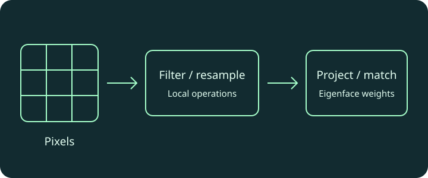

INT302 · Lab 1 report
Neighborhoods, boundary handling, interpolation, noise and filtering comparisons.
INT302 · Image processing · Two individual MATLAB labs
Two MATLAB labs exploring how local pixel operations improve images, and how eigenface projections turn face images into compact feature vectors.
01 · Problem & goal
How do local pixel operations change visual quality, and how can a compact linear representation support face matching?
02 · My contribution
Implemented neighborhood analysis, resampling and filtering, followed by eigenface projection, reconstruction and distance-based matching in two individual MATLAB labs.
03 · Implementation approach
Lab 1 implements neighborhood extraction, boundary handling, averaging, nearest-neighbor/bilinear resampling and noise-filtering experiments. Lab 2 projects images into a supplied eigenface basis, reconstructs images from weights, compares distances and implements histogram equalization.
04 · Results & reflection
Representation and numerical assumptions matter. The reports provide the submitted results; the browser example explains interpolation without claiming a fresh MATLAB run.
05 · Demonstration & visuals

Compare a generated 12 × 12 pattern enlarged with nearest-neighbor or bilinear interpolation. This browser illustration explains the Lab 1 method; it is separate from the original MATLAB experiments.
06 · Source & project materials
Neighborhoods, boundary handling, interpolation, noise and filtering comparisons.
Eigenface projection, reconstruction, recognition and histogram equalization.
Original reports and source materials support the summary above. Team contributions and validation limits are stated on this page.